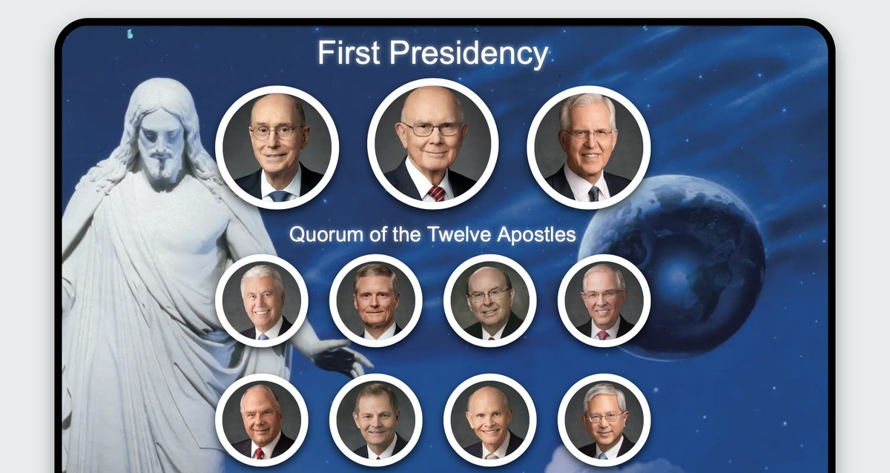
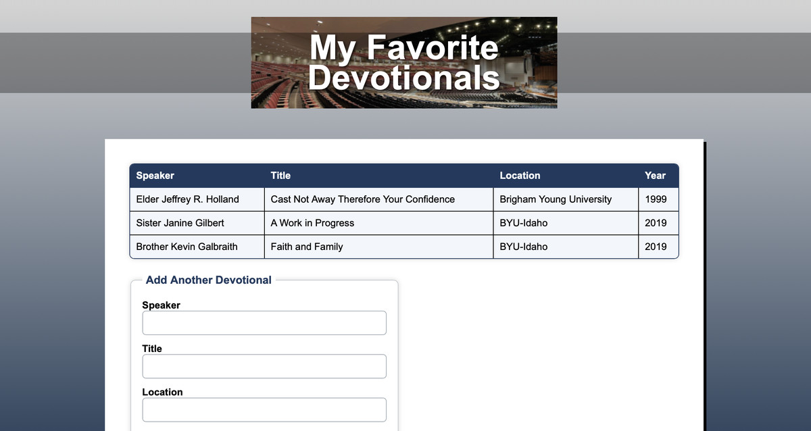
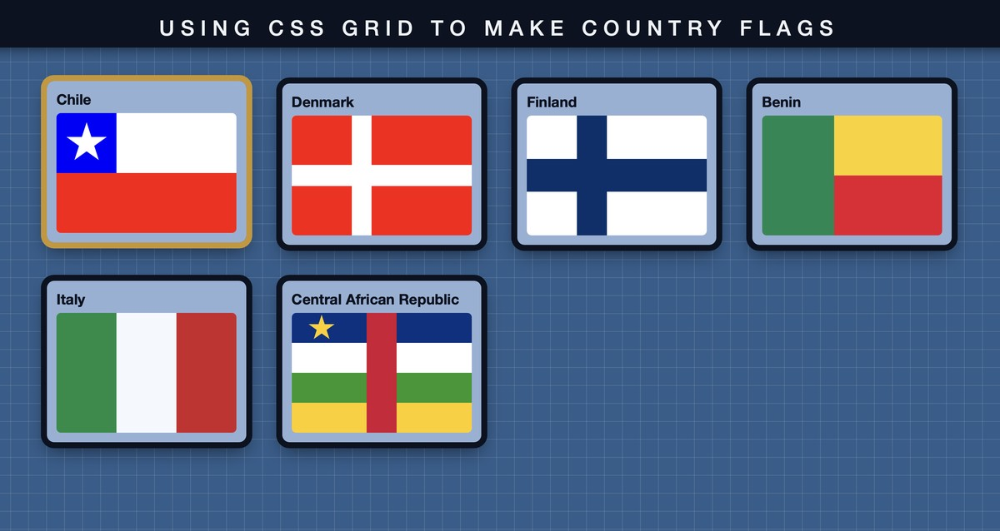
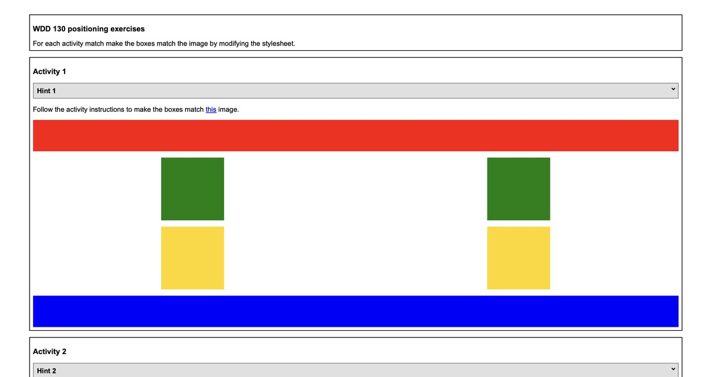
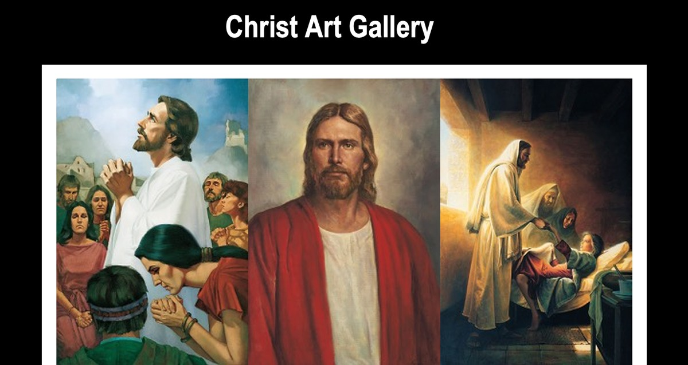
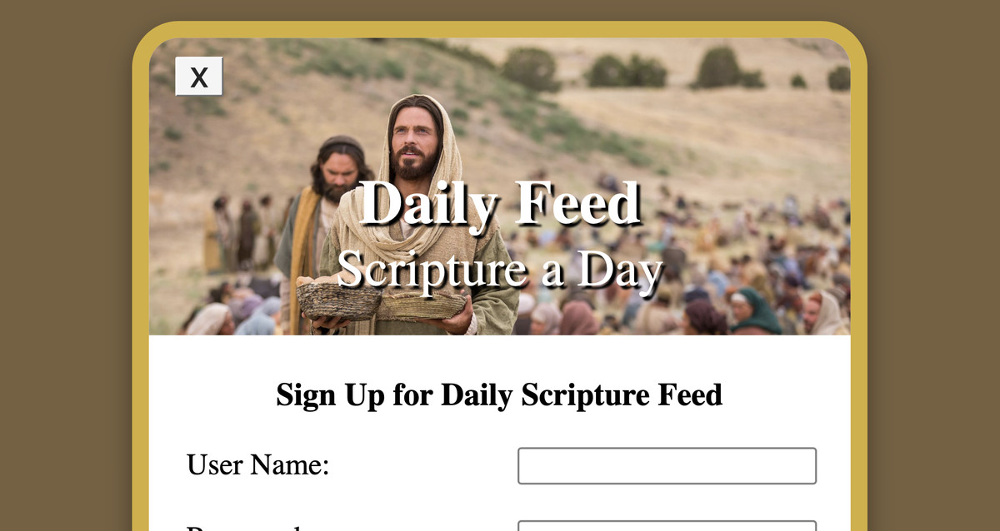

Prophet Card
Following a simple wireframe to turn a design into code, shaping the card with the box model, centering it on the page, and styling its link.
ViewCathy Bisschoff
Designer Learning to Code
Following a simple wireframe to turn a design into code, shaping the card with the box model, centering it on the page, and styling its link.
View
Building a page from a design, laying it out with Flexbox and Grid, adding shadows to the panel and photos for depth, and adding a hover effect that changes the outline.
View
Building a table with headings, rows and cells, and a form with labels and inputs, then styling both to match the page.
View
Styling a page with given HTML: importing fonts, using a limited palette, and adding shadows and glows to carry the holiday theme across the whole page.
View
Practicing CSS Grid alignment properties by building country flags in different layouts, arranging them on the page in a grid that adjusts to the screen width, and adding a hover effect to each.
View
Matching layouts from example images by changing only the CSS, using CSS Grid for most, a float for the text wrap, and z-index for layering, with shadows and a hover effect added.
View
Optimizing images by reducing their file size while keeping their resolution, and using small thumbnails that link to the full size versions, so the page loads faster.
View
Styling a form to match a design, laying out its fields with Grid, and adding a shadow and hover effects so the form is clear and easy to use.
View